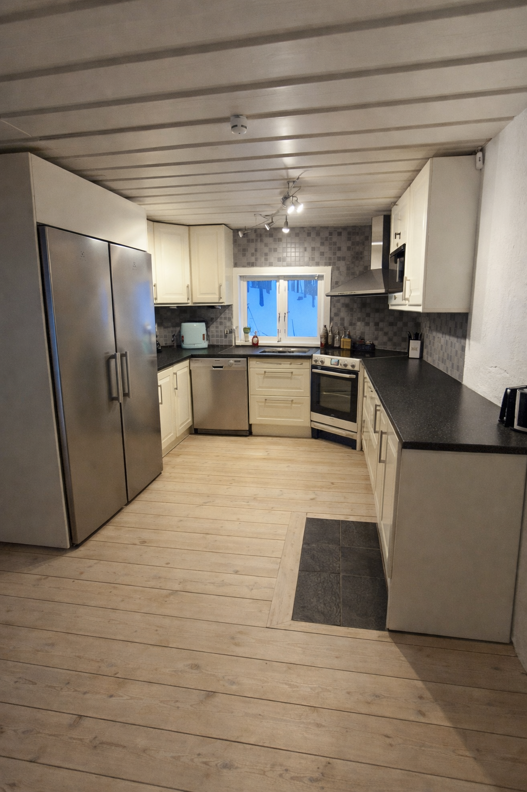
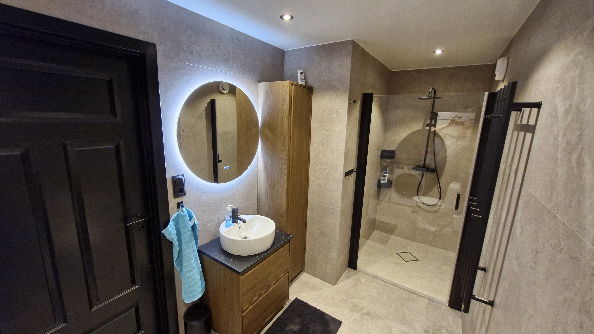
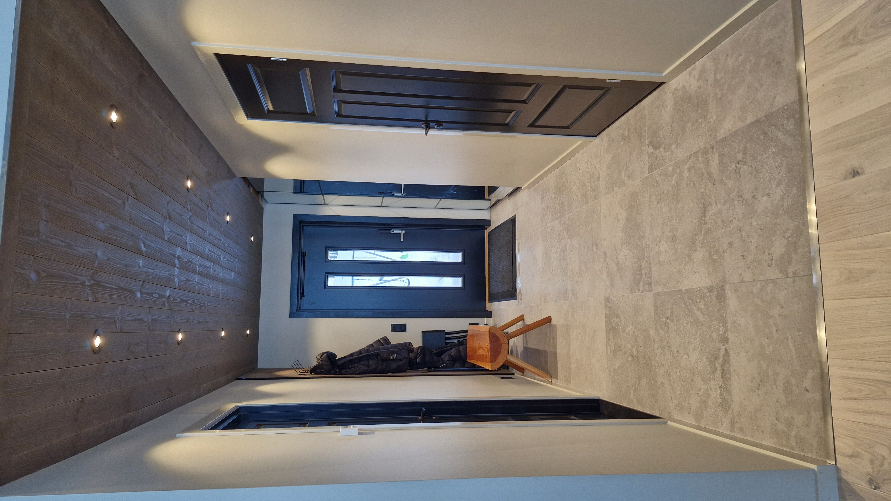
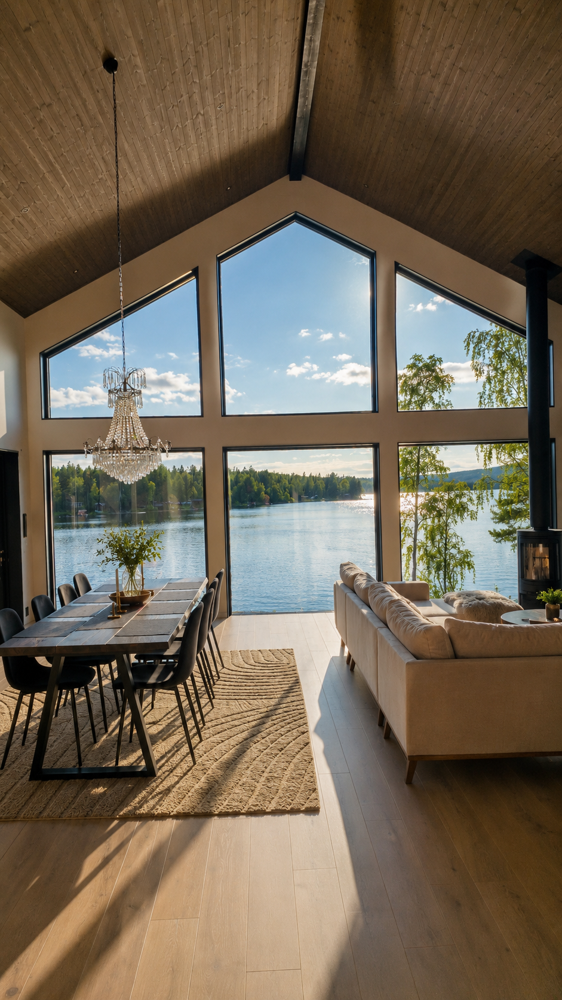

PHOTO GALLERY
Discover Lake House Dalarna








WELCOME TO SOLSIDAN DALARNA
Wake up to panoramic lake views, enjoy your morning coffee on the terrace, relax in the lakeside sauna and experience Scandinavian nature from an architect-designed retreat on beautiful Lake Rogsjön.
Lake House Dalarna combines modern Scandinavian architecture with one of the most beautiful lakeside settings in Dalarna.
Known to Airbnb guests as Solsidan Dalarna, this unique holiday home offers panoramic lake views, generous living spaces, large outdoor terraces and a peaceful atmosphere only 25 minutes from Falun.
Whether you are travelling as a family, with friends or simply looking for a relaxing getaway, this is a place designed for unforgettable moments.
Book your stay
PHOTO GALLERY



WHY GUESTS LOVE IT
Step directly onto your own sandy beach and enjoy swimming, sunbathing or simply relaxing by the lake.
Enjoy a traditional Swedish sauna overlooking beautiful Lake Rogsjön.
Large windows frame breathtaking sunsets and peaceful lake views all year round.
Architect-designed interiors with generous living spaces, high ceilings and natural light.
Forests, hiking trails, fishing and swimming are only a few steps away.
Located only 25 minutes from Falun with easy access to the best attractions in Dalarna.
DISCOVER DALARNA
Historic streets, restaurants, shopping and culture only 25 minutes away.
One of Sweden's most famous UNESCO World Heritage Sites.
Visit the legendary artist's beautiful home in Sundborn.
Long pier, cafés and one of Sweden's most charming lake destinations.
Traditional Dalarna with markets, events and beautiful surroundings.
Excellent skiing during winter, less than an hour away.
READY FOR YOUR NEXT ESCAPE?
Known on Airbnb as Solsidan Dalarna, this unique lakeside retreat offers Scandinavian design, breathtaking lake views, a private sandy beach and a relaxing sauna — everything you need for an unforgettable stay in Dalarna.
Check Availability on AirbnbLOCATION
The house is located directly beside Lake Rogsjön, surrounded by forests, nature and crystal-clear water.
Despite the peaceful surroundings you are only about 25 minutes from Falun and within comfortable driving distance of many of Dalarna's most popular destinations.